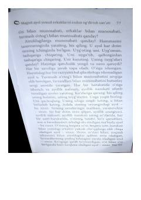

MAAyollik energiyasini uyg'otish va o'ziga bo'lgan ishonchni oshirish bo'yicha amaliy qo'llanma.
Ushbu kitob ayollarga o'z ichki dunyosini kashf etish, ayollik energiyasini uyg'otish va munosabatlarni yaxshilash bo'yicha amaliy tavsiyalar beradi. Muallif o'ziga bo'lgan ishonchni oshirish va hayot sifatini yaxshilash uchun turli psixologik mashqlarni taqdim etadi.